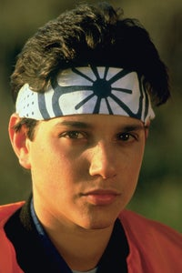

Daniel Larusso

Daniel Larusso is the main protagonist from the Karate Kid trilogy.
Often talked about as well is his karate teacher Mr. Miyagi.
Why I like Daniel
- He's resilient and tough in the face of adversity
- His crane kick to win the karate tournament was super cool
- He's also compassionate and cares for others